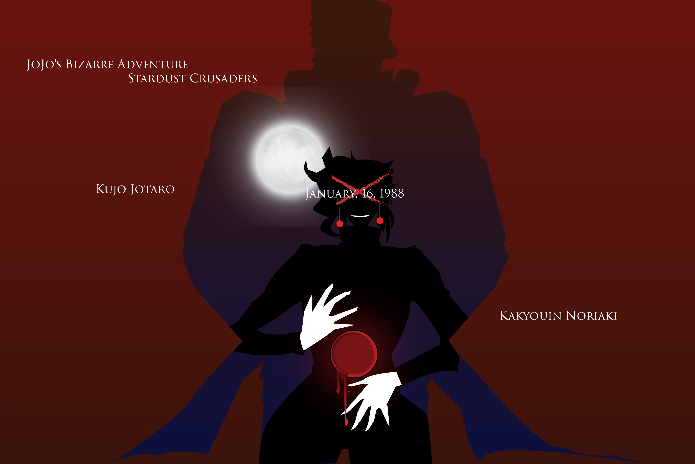

I was drawing that two existing characters, they appear in the third part of JOJO’s Bizarre Adventure.
One is a guy who has been alone for 17 years and finally got a friend which is another guy who has a mission and saves the world. One of them died in the storyline, while the other cannot forget this friendship after several decades.
The blood hole in the body is a hard part because I want to make the most vivid effect possible. But still not so ideal.